<?xml version="1.0" encoding="UTF-8" standalone="no"?>
 user.preroot <!DOCTYPE html PUBLIC "-//W3C//DTD XHTML 1.0 Transitional//EN" "http://www.w3.org/TR/xhtml1/DTD/xhtml1-transitional.dtd"><html xmlns="http://www.w3.org/1999/xhtml"><head><meta http-equiv="Content-Type" content="text/html; charset=UTF-8" /> user.head.title <link rel="stylesheet" type="text/css" href="docbook.css" /><meta name="generator" content="DocBook XSL Stylesheets Vsnapshot" /><meta name="keywords" content="Cisco, H3C, Juniper, F5 BIG-IP, Array, Dell, IBM, HP, , " /><link rel="home" href="index.html" title="Netkiller Network 手札" /><link rel="up" href="index.html" title="Netkiller Network 手札" /><link rel="prev" href="sonicwall/monitor.html" title="monitor 监控命令" /><link rel="next" href="vsphere.html" title="VMware vSphere Client" /> user.head.content </head><body> user.header.navigation <div class="navheader"><table width="100%" summary="Navigation header"><tr><th colspan="3" align="center">第 43 章 WMware</th></tr><tr><td width="20%" align="left"><a accesskey="p" href="sonicwall/monitor.html">上一页</a> </td><th width="60%" align="center"> </th><td width="20%" align="right"> <a accesskey="n" href="vsphere.html">下一页</a></td></tr></table><hr /></div> user.header.content <div class="chapter"><div class="titlepage"><div><div><h1 class="title"><a id="wmware"></a>第 43 章 WMware</h1></div></div></div><div class="toc"><p><strong>目录</strong></p><dl class="toc"><dt><span class="section"><a href="wmware.html#esxi">WMware ESXi</a></span></dt><dt><span class="section"><a href="vsphere.html">VMware vSphere Client</a></span></dt></dl></div><p><a class="ulink" href="http://www.vmware.com/" target="_top">http://www.vmware.com/</a></p><div class="section"><div class="titlepage"><div><div><h2 class="title" style="clear: both"><a id="esxi"></a>WMware ESXi</h2></div></div></div><div><table border="0" summary="manufactured viewport for HTML img" style="cellpadding: 0; cellspacing: 0;" width="NaN"><tr><td>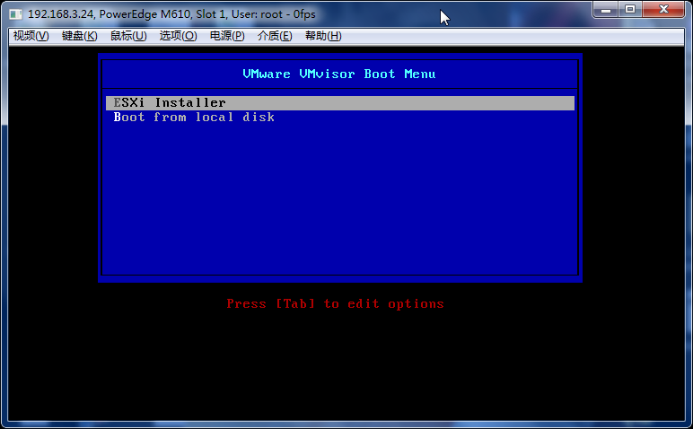</td></tr></table></div><div><table border="0" summary="manufactured viewport for HTML img" style="cellpadding: 0; cellspacing: 0;" width="NaN"><tr><td>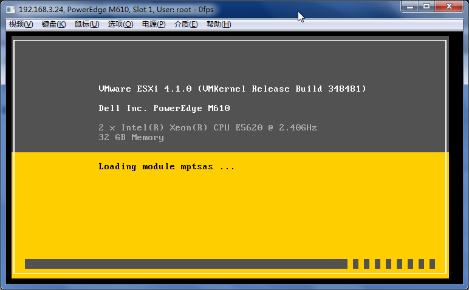</td></tr></table></div><div><table border="0" summary="manufactured viewport for HTML img" style="cellpadding: 0; cellspacing: 0;" width="NaN"><tr><td>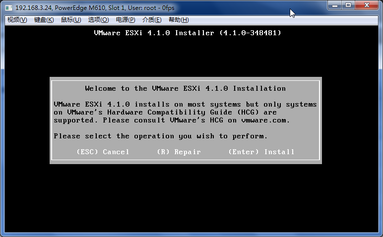</td></tr></table></div><div><table border="0" summary="manufactured viewport for HTML img" style="cellpadding: 0; cellspacing: 0;" width="NaN"><tr><td>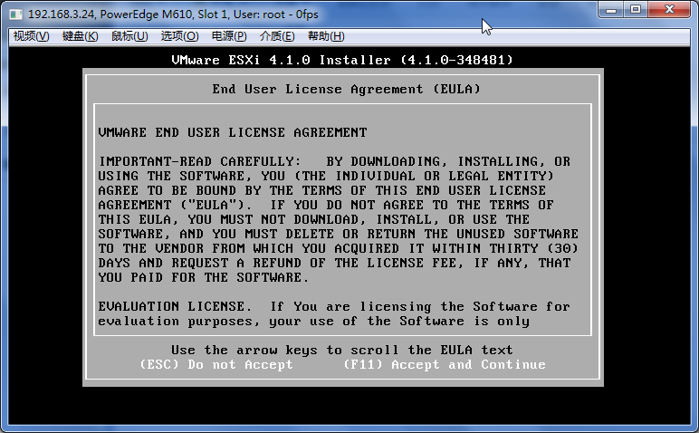</td></tr></table></div><div><table border="0" summary="manufactured viewport for HTML img" style="cellpadding: 0; cellspacing: 0;" width="NaN"><tr><td>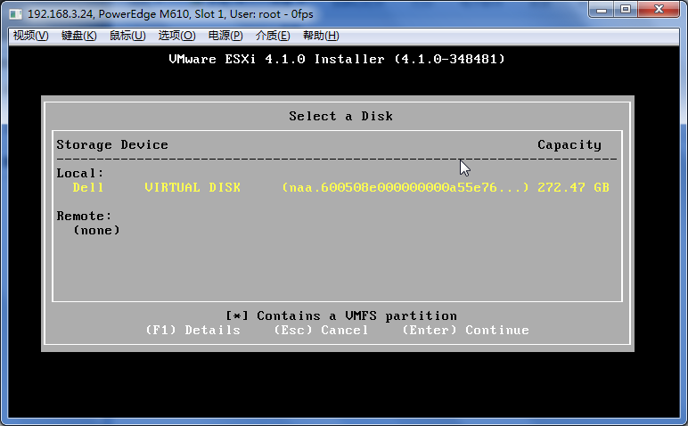</td></tr></table></div><div><table border="0" summary="manufactured viewport for HTML img" style="cellpadding: 0; cellspacing: 0;" width="NaN"><tr><td>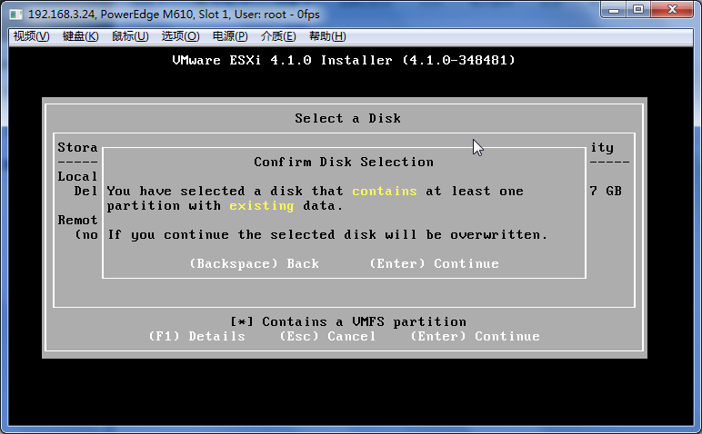</td></tr></table></div><div><table border="0" summary="manufactured viewport for HTML img" style="cellpadding: 0; cellspacing: 0;" width="NaN"><tr><td>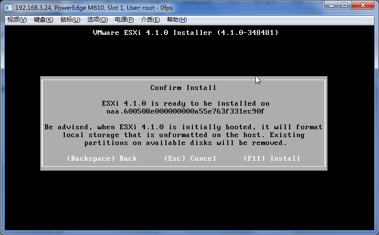</td></tr></table></div><div><table border="0" summary="manufactured viewport for HTML img" style="cellpadding: 0; cellspacing: 0;" width="NaN"><tr><td>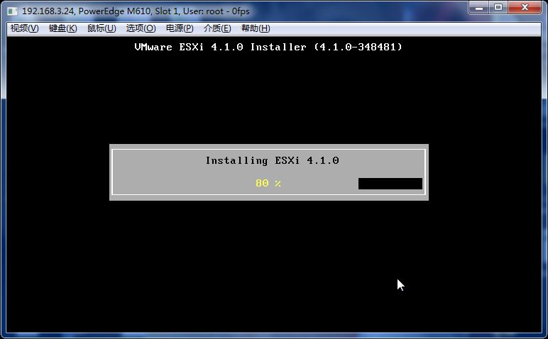</td></tr></table></div><div><table border="0" summary="manufactured viewport for HTML img" style="cellpadding: 0; cellspacing: 0;" width="NaN"><tr><td>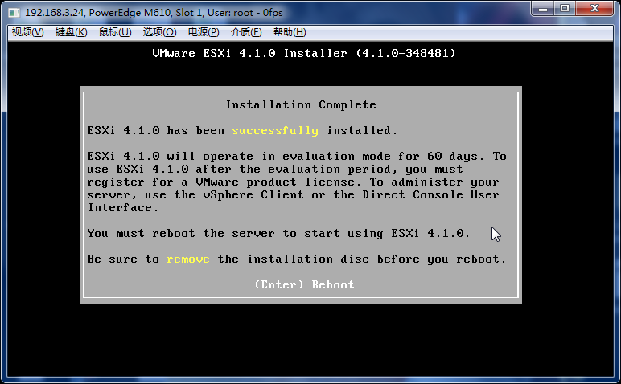</td></tr></table></div><p>ESXi 界面</p><div><table border="0" summary="manufactured viewport for HTML img" style="cellpadding: 0; cellspacing: 0;" width="NaN"><tr><td>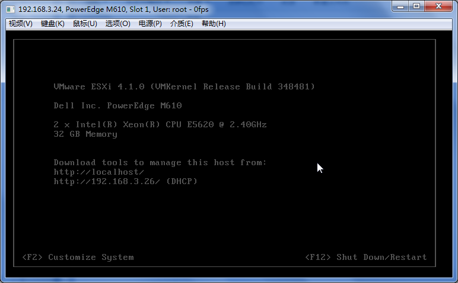</td></tr></table></div><p>F2键进入</p><div><table border="0" summary="manufactured viewport for HTML img" style="cellpadding: 0; cellspacing: 0;" width="NaN"><tr><td>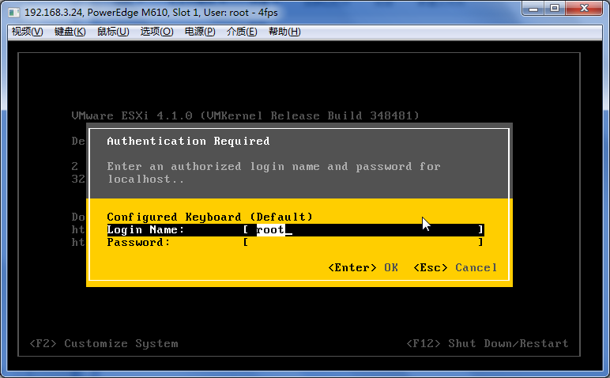</td></tr></table></div><p>更改root密码</p><div><table border="0" summary="manufactured viewport for HTML img" style="cellpadding: 0; cellspacing: 0;" width="NaN"><tr><td>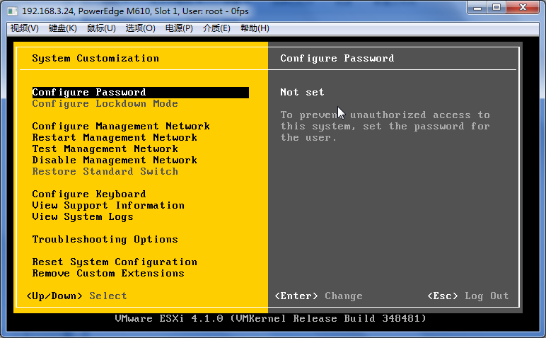</td></tr></table></div><div><table border="0" summary="manufactured viewport for HTML img" style="cellpadding: 0; cellspacing: 0;" width="NaN"><tr><td>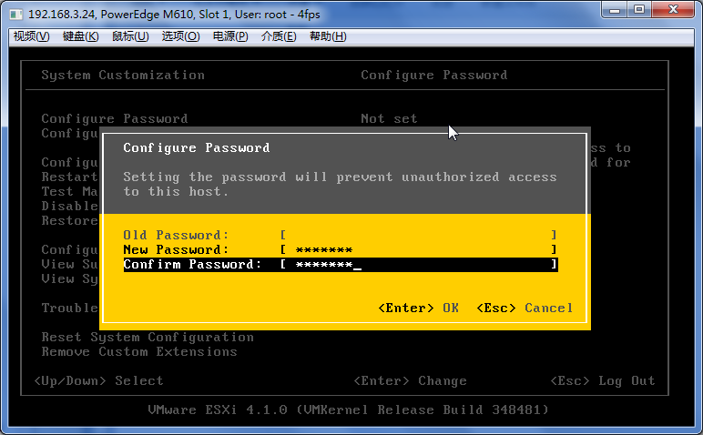</td></tr></table></div><p>配置网络</p><div><table border="0" summary="manufactured viewport for HTML img" style="cellpadding: 0; cellspacing: 0;" width="NaN"><tr><td>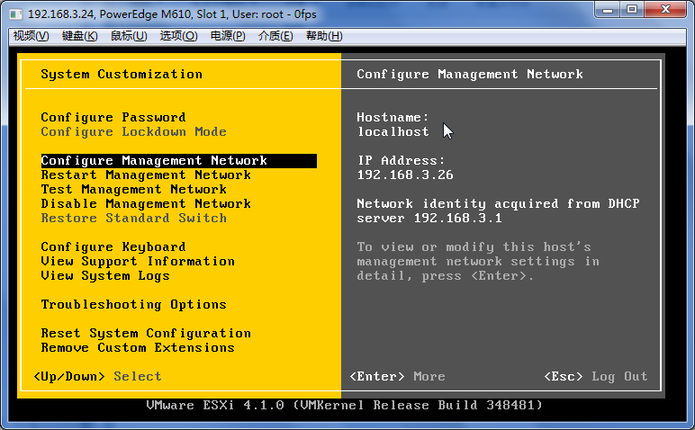</td></tr></table></div><div><table border="0" summary="manufactured viewport for HTML img" style="cellpadding: 0; cellspacing: 0;" width="NaN"><tr><td>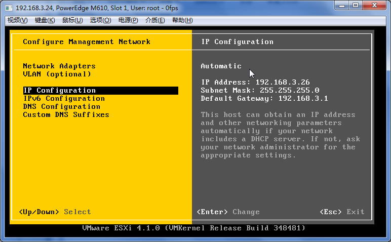</td></tr></table></div><div><table border="0" summary="manufactured viewport for HTML img" style="cellpadding: 0; cellspacing: 0;" width="NaN"><tr><td>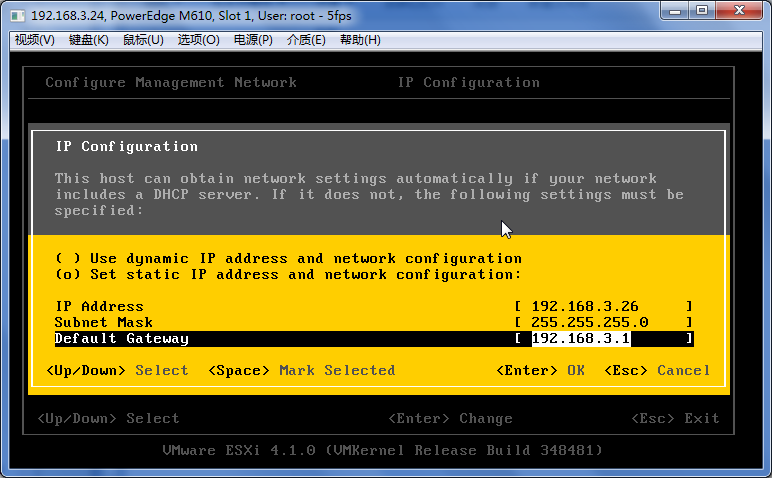</td></tr></table></div><div><table border="0" summary="manufactured viewport for HTML img" style="cellpadding: 0; cellspacing: 0;" width="NaN"><tr><td>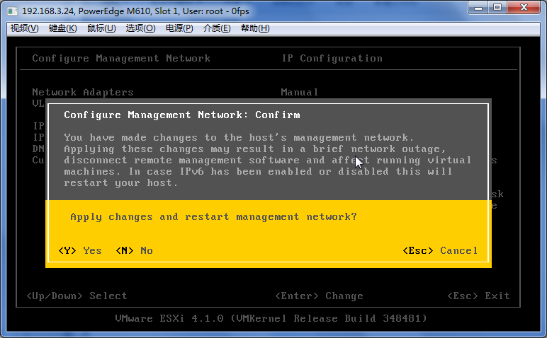</td></tr></table></div><div><table border="0" summary="manufactured viewport for HTML img" style="cellpadding: 0; cellspacing: 0;" width="NaN"><tr><td>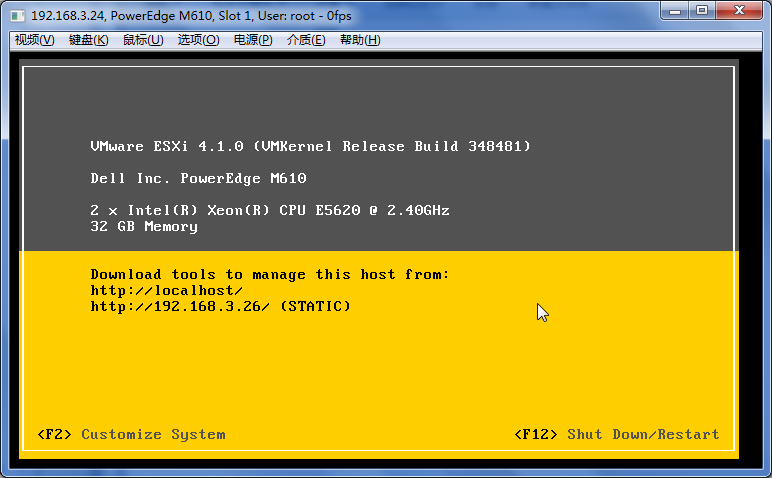</td></tr></table></div></div></div> user.footer.content <div class="navfooter"><hr /><table width="100%" summary="Navigation footer"><tr><td width="40%" align="left"><a accesskey="p" href="sonicwall/monitor.html">上一页</a> </td><td width="20%" align="center"> </td><td width="40%" align="right"> <a accesskey="n" href="vsphere.html">下一页</a></td></tr><tr><td width="40%" align="left" valign="top">monitor 监控命令 </td><td width="20%" align="center"><a accesskey="h" href="index.html">起始页</a></td><td width="40%" align="right" valign="top"> VMware vSphere Client</td></tr></table></div> user.footer.navigation </body></html>